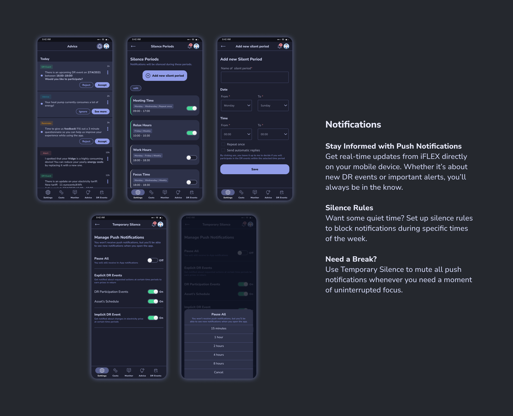
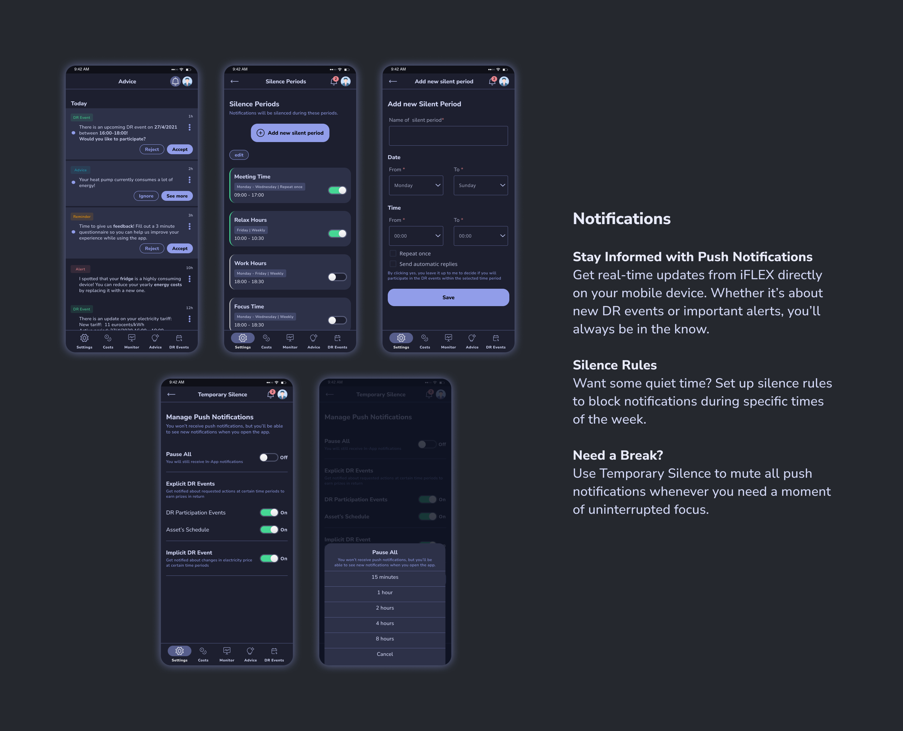

The iFLEX solution helps Consumers or Prosumers improve the energy efficiency and sustainability of their premises. It allows them to participate in the energy market by offering services that help balance the demand for electricity. This means they can adjust their energy usage to help stabilize the overall energy supply and demand.
Design and development of iFLEX Assistant
October 2020 - September 2022 | 23 months
Funding from the European Union’s Horizon 2020 research and innovation programme
UX/UI Designer, Front-end Developer
Figma, Miro, Userlytics, HTML, CSS, JS, React Native
In my role as a UX/UI Designer at Intracom Telecom, I collaborated closely with our partners. Following their research, they provided me with a list of user requirements, detailing what the users expected the system to accomplish. These requirements are captured and documented as user stories:
As a consumer/prosumer...
- I want to see my energy consumption/production in a detailed, real-time and historic manner so that I can understand my energy system and trends more clearly and make timely decisions
- I would like to have the option to choose and change the level of automation, ranging from automatic energy optimisation to manual optimisation through advice on reaching targets so that I have the freedom of choice
- I want to view information on and see the results of my participation in demand response so that I can evaluate the status and effect
- I would like the system to consider and adapt to my personal preferences and needs so that it is always relevant to my situation
- I would like any communication with the service to happen as seamless and natural as possible so that it makes operation easy and convenient for me
After gathering all the relevant information about our target users, I moved forward with creating the initial draft of user flows and information architecture.
To effectively design the application, the user interface should follow some predefined design requirements, which were crucial in shaping the user experience and functionality of the mobile application.

First, I began by creating sketches and wireframes. These helped me outline the basic layout and structure of the user interface. This step helped me establish a solid foundation for the design and helped in my communication with the team.
The first step before designing the user interface, was to create a mood board. I used the mood board to organise my design research and inspiration. I explored similar apps in the market to understand industry standards and expectations. I included images of apps that share a similar purpose or target audience.
Because the application should feel intuitive to both Android users, I used design standards set by Google’s material UI to guide my design.
The project logo featured specific colours and styles that I incorporated into the iFLEX Assistant's design. This ensured consistency and a strong visual identity across the project.
The mood board helped me set a clear design direction for the iFLEX Assistant.
A questionnaire concerning the initial iFLEX mock-ups was distributed to all project partners, so that they can submit their feedback on UX. I used this feedback to enhance the ongoing UI design and supported features. Participants were asked to complete this questionnaire from the point of view of the end user and not the solution provider. Based on this, after careful observation of the mockups and the way the application is designed, they were asked to report any weaknesses in the existing design that may confuse the end users and distract them from achieving their goals.

Using the feedback collected from the questionnaire, I improved the user flows and information architecture to accommodate additional features and elevate the overall user experience. My objective was to create a UI that feels intuitive and assists users in efficiently and effortlessly accomplishing their core tasks.

I refined the HiFI Mockups based on collected feedback. The updated mockups were usability tested with carefully selected participants (with employees from partner companies that are potential customers) who completed a set of basic tasks. I closely observed their actions and noted any difficulties they encountered. Afterwards, I asked them open-ended questions about their experience.
Through analysis of the usability testing results, I identified tasks with low success rates, efficiency issues, and critical errors. This process enabled me to pinpoint potential design issues and propose necessary redesigns.

As iFLEX Assistant is the first digital product of the project, there is the possibility that more digital products will be designed in the future to help stakeholders manage their tasks in a more accessible way than they used to. So, building a scalable design system that will support the creation of different products was an important step.
I created customised components based on Google's Material UI. While Material UI provides a solid foundation, I wanted to create components that are uniquely tailored to the app's requirements

I designed the iFLEX Assistant with a strong focus on user-centricity and accessibility. Every colour, font, and component choice was made with the user in mind, ensuring a visually appealing and user-friendly experience.
To enhance accessibility:
- I verified colour contrast against WCAG guidelines, ensuring readability for users with varying visual abilities.
- Careful font selection, backed by research, enhances readability and benefits all users.
- The navigation system was designed with clear labels and consistent placement for user-friendliness.
- The app's initial dark mode design enhances accessibility by reducing glare and minimising blue light exposure.
Overall, my design prioritises inclusivity and usability, making iFLEX Assistant a tool for everyone, regardless of abilities or visual challenges.

Along the way, I gathered feedback from project managers, team leaders, and developers to make sure everyone's input is considered. One of the main goals during the design of the application was to provide a friendly and simple user experience, so that the users would perceive the application as their personal assistants. The wording content of the application was carefully picked – utilising first person language so as to create a sense of dialogue between the user and the application.
 

Once the HiFi Mockups were updated and a user-friendly version was determined, we began developing the application. In close collaboration with the back-end developes handling the app's functionality, I took on the role of one of the front-end developers, responsible for creating the visual elements of the app using React Native. I collaborated with the developers to ensure a smooth transition from design to implementation. I provided comprehensive style guides and documentation for accuracy. I also actively participated in reviewing the developed product to verify its alignment with design specifications and quality standards. This way I made sure to prioritise quality to enhance the user experience and customer satisfaction.
The iFLEX Assistant's visual design incorporates a conversational tone, creating user engagement. The design is inclusive and accessible to all users, regardless of their abilities. To simplify complex information, innovative data visualisation techniques were employed, enhancing user understanding and decision-making. The visual design goes beyond aesthetics to make interactions engaging, information accessible, and the experience inclusive.
This project offered an exciting opportunity to explore design principles tailored to energy sector apps. It provided valuable experience in conducting research and collaborating with diverse individuals from various locations. I had the autonomy to take initiative in my design choices, seeking team approval along the way. Regular testing at each stage helped identify issues early in the process. Moreover, I had the chance to familiarize myself with React Native and transform HiFi Mockups into a functioning application.
Let's have a talk so you can learn more about my work!
© Copyright Ioanna Lazaridou | All rights reserved.